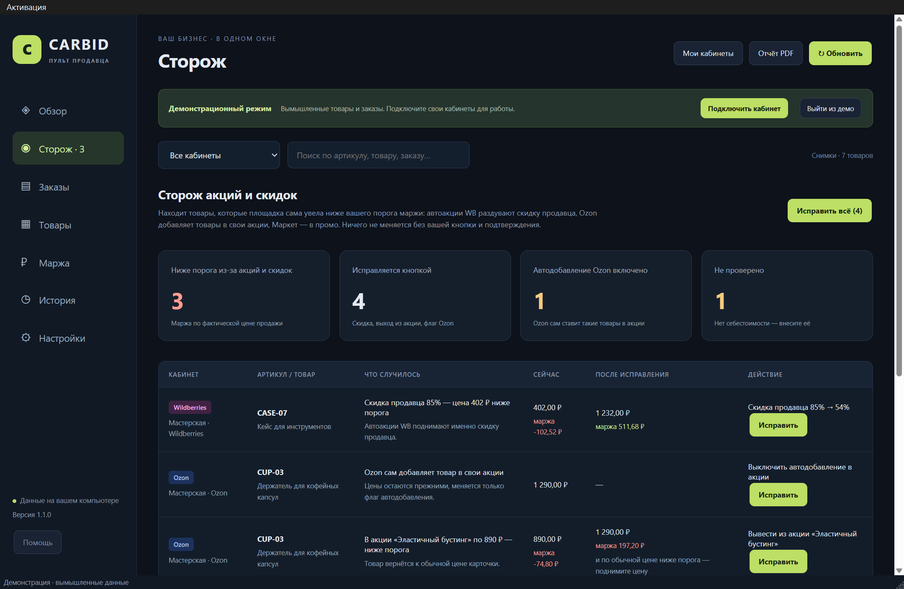
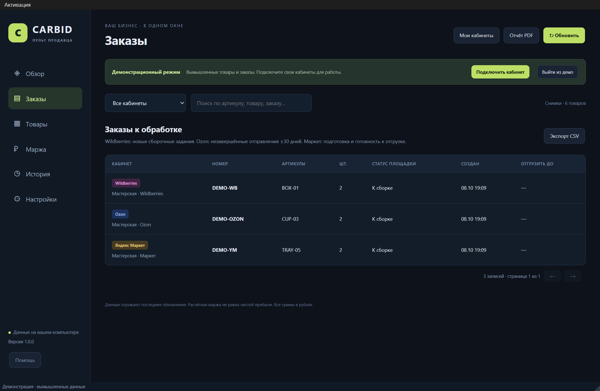
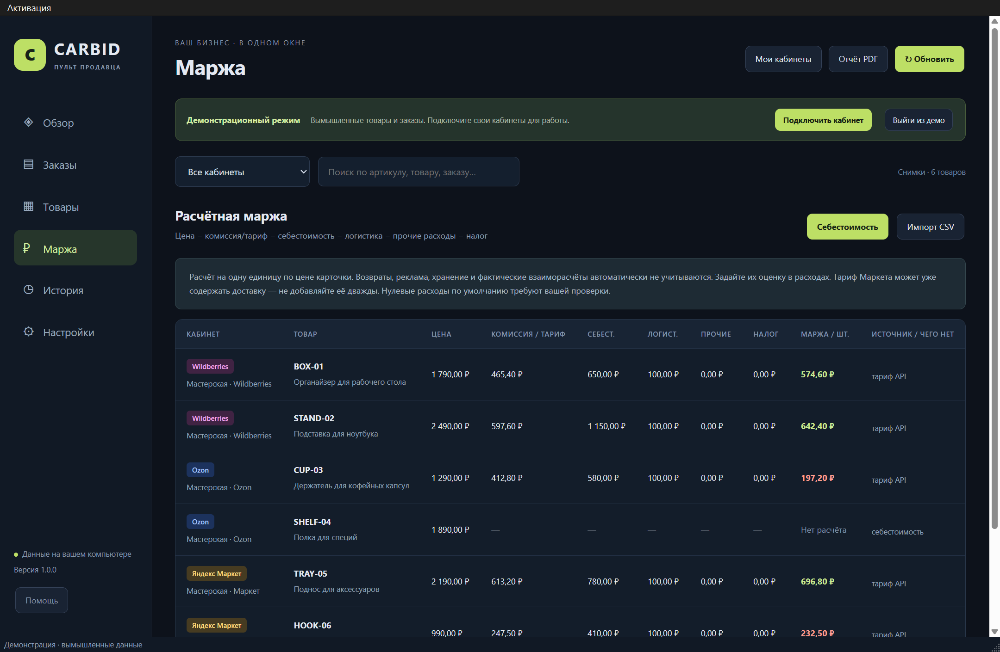
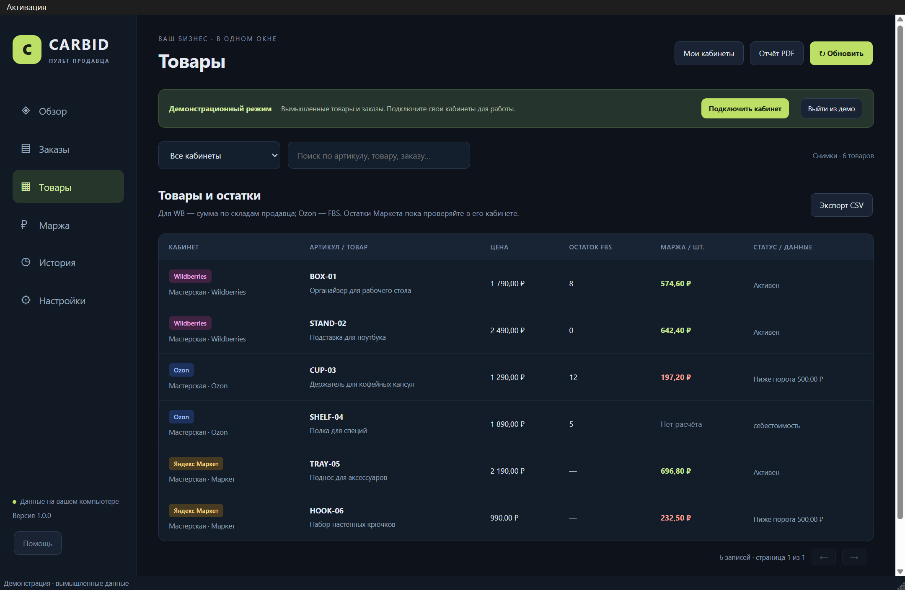
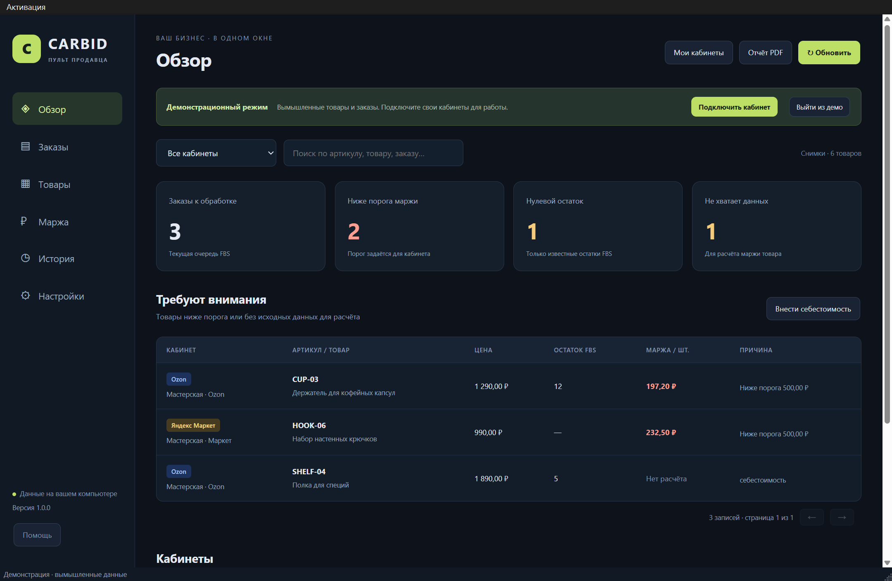

Акции площадок съедают вашу маржу. Пульт найдёт такие товары и исправит по кнопке
Программа для Windows. Сторож акций показывает товары, которые автоакции WB, Ozon и Маркета увели ниже вашего порога маржи. Рядом — заказы FBS, товары, цены и расчётная маржа всех ваших кабинетов в одном окне.
Бесплатно — демонстрация на вымышленных данных. Свои кабинеты подключаются кодом активации. Ключи API остаются на вашем компьютере.

Сторож акций
Площадки сами ставят товары в акции и раздувают скидки. Цена падает, комиссия считается от новой цены — и с каждой продажи вы получаете меньше, чем закладывали. Сторож сравнивает цену после акций с вашими расходами и показывает, где маржа ниже порога.
Раздутая скидка продавца
Автоакции WB поднимают скидку продавца. Сторож предлагает наибольшую скидку, при которой маржа не ниже вашего порога. Базовая цена не меняется.
Автодобавление в акции
Ozon сам добавляет товары в свои акции. Сторож выключает автодобавление и выводит из акций, где цена ниже порога маржи.
Промо ниже порога
Показывает товары в промо Маркета с маржой ниже порога и выводит их из промо.
Ничего не меняется без вашей кнопки и окна подтверждения. Каждое исправление записывается в журнал. Обычное обновление данных только читает кабинеты.
Всё остальное — в одном окне
Несколько кабинетов трёх площадок, фильтр по кабинету и поиск по артикулам и заказам.




На скриншотах — реальный интерфейс программы с демонстрационными данными.
Попробуйте бесплатно
Сначала посмотрите программу на демонстрационных данных — без кода, без ключей и без оплаты.
Скачайте и распакуйте
Архив для Windows x64, около 175 МБ. Запустите Install.cmd или CARBID.exe — откроется демонстрация.
Купите код активации
9 900 ₽ разово на Wildberries: комплект с флешкой, кодом активации и инструкцией.
Подключите свои кабинеты
Меню «Активация» → введите код, добавьте ключи API своих кабинетов и обновите данные.
Программа не подписана коммерческим сертификатом, поэтому Windows может показать «Неизвестный издатель». Нажмите «Подробнее» → «Выполнить в любом случае».
Цена
CARBID · Пульт продавца
9 900 ₽- Разовая покупка, без подписки.
- Код активации подходит ко всем версиям 1.x.
- Windows x64, проверено на Windows 11. Интерфейс на русском.
Чего в версии 1.1 нет
- Остатков Яндекс Маркета, FBO и FBW.
- Рекламы, отзывов, финансовых отчётов.
- Фонового обновления и мобильного приложения: данные обновляются по кнопке.
Маржа в программе — расчётная по вашим расходам, а не чистая прибыль по фактическим выплатам. Работа подключений зависит от API площадок.
Вопросы
Безопасно ли вводить ключи API?
Ключи вводятся только на вашем компьютере и хранятся зашифрованными средствами Windows для вашей учётной записи. Продавцу программы их отправлять не нужно, программа не передаёт их третьим сторонам. В резервную копию ключи не попадают.
Может ли программа что-то сломать в кабинете?
Обновление только читает данные. Изменять программа может одно — скидку и участие в акциях, и только через сторож, по вашей кнопке и после окна подтверждения. Заказы, остатки и карточки она не трогает.
Нужен ли сервер или подписка?
Нет. Программа работает на вашем компьютере, данные хранятся локально. Интернет нужен только для обновления данных из кабинетов.
Это официальный продукт Wildberries, Ozon или Маркета?
Нет. Названия площадок обозначают совместимость: программа работает через их открытые API.